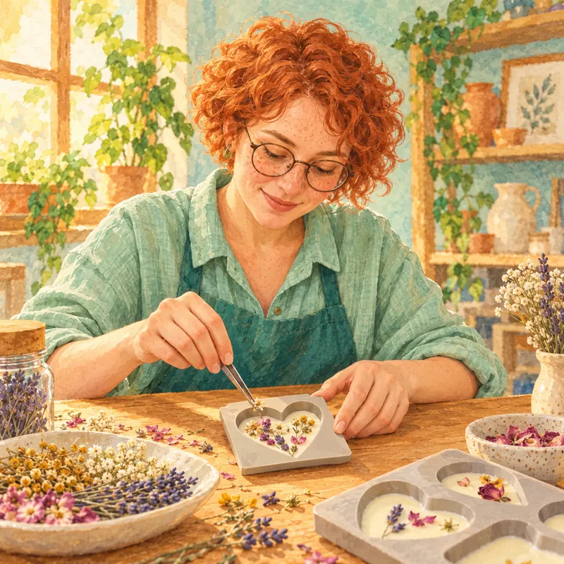
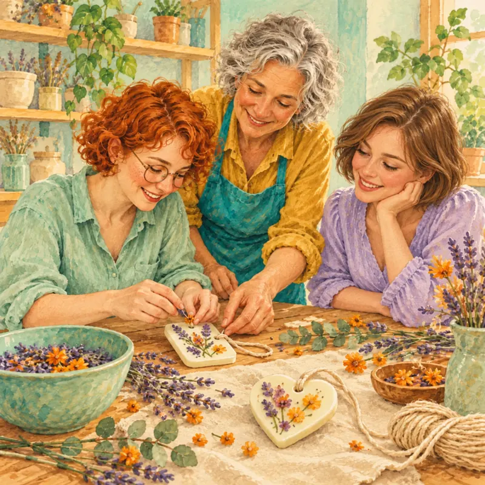
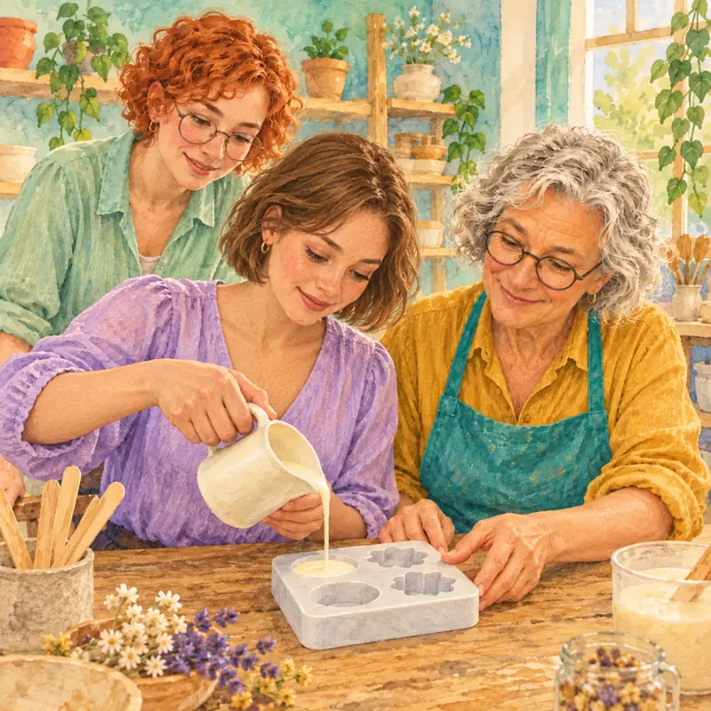
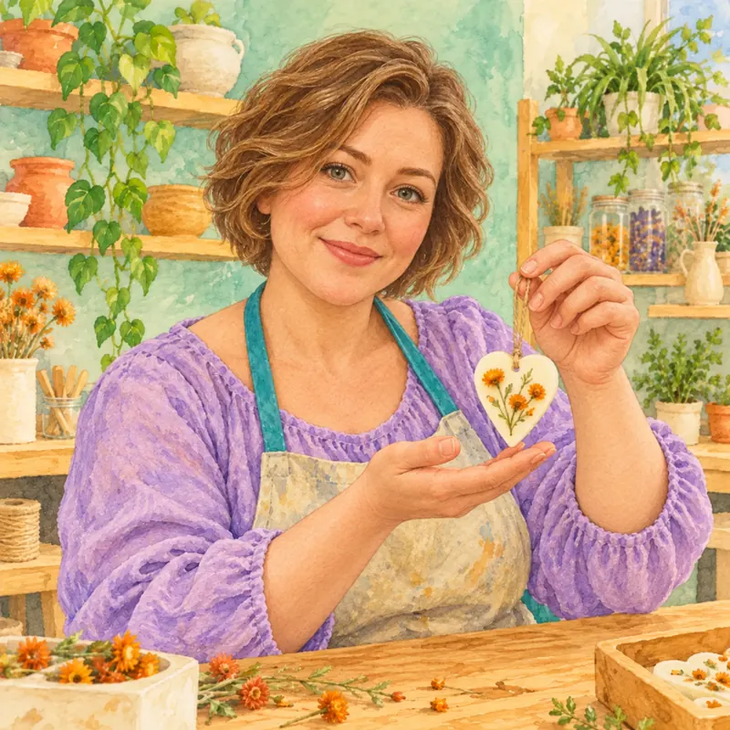
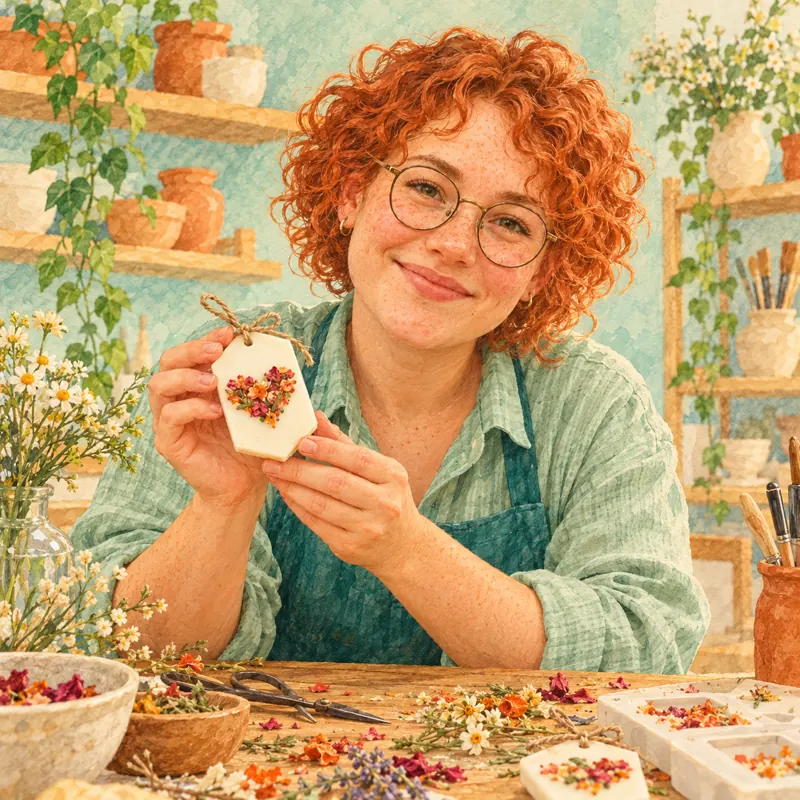

Подарок, в котором остаётся тепло
Художественная история для учебного проекта. Нина, Лера и мастер Марина — вымышленные персонажи. Иллюстрации созданы с помощью ИИ и не изображают реальных участников.
Нина и Лера пришли в мастерскую с одной идеей: сделать небольшой подарок для мамы. На столе стояли мисочки с сухоцветами, формы для воска и моток хлопкового шнура.
Нина выбрала лаванду и маленькие оранжевые цветы. Она сначала разложила их на бумаге, а потом перенесла узор в форму. Ей хотелось оставить между лепестками немного свободного места, чтобы каждый цветок был виден.
Лера решила сделать саше в форме сердца. Мастер Марина помогла ей подготовить основу и показала, как аккуратно заполнить форму. Они работали без спешки: можно было остановиться, спросить и попробовать ещё раз.
Пока воск остывал, Нина и Лера сравнивали свои узоры. Подарки получились разными: у Нины — маленький цветочный сад, у Леры — светлое сердечко с тёплыми оранжевыми акцентами.
В конце они добавили шнурки и завернули саше в тонкую бумагу. Каждая унесла с собой вещь, которую придумала и сделала сама.
Это придуманный рассказ о внимании, совместной работе и радости творчества. Он не является отзывом или отчётом о мероприятии какой-либо организации.




